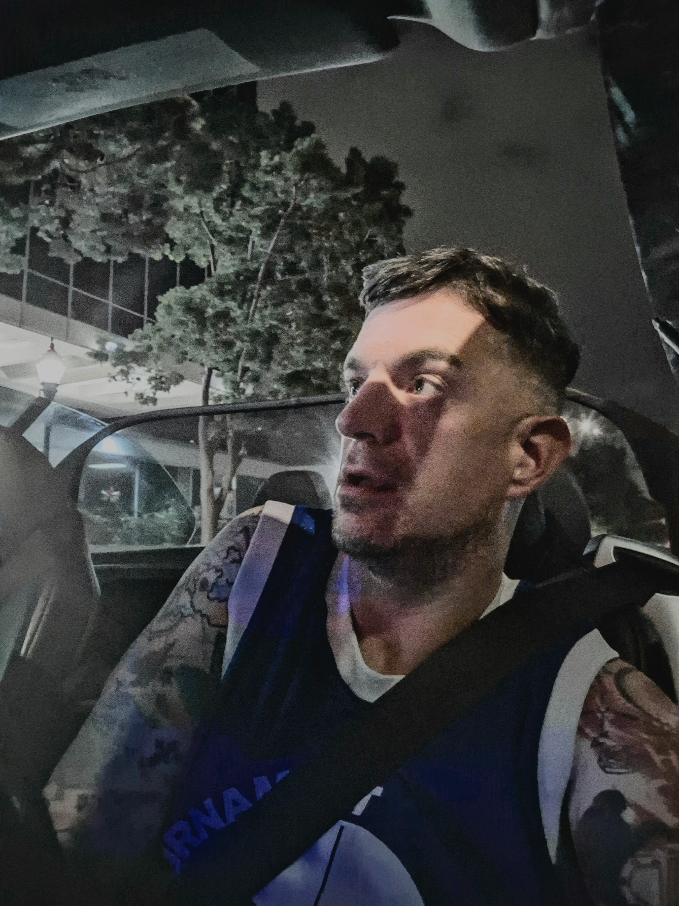
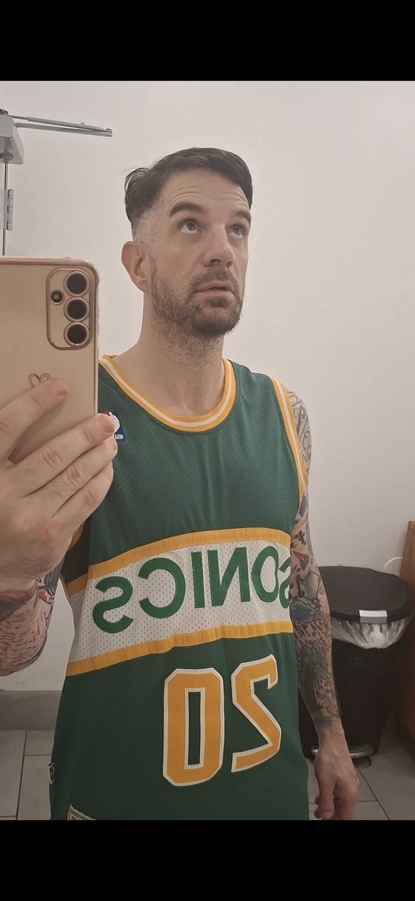
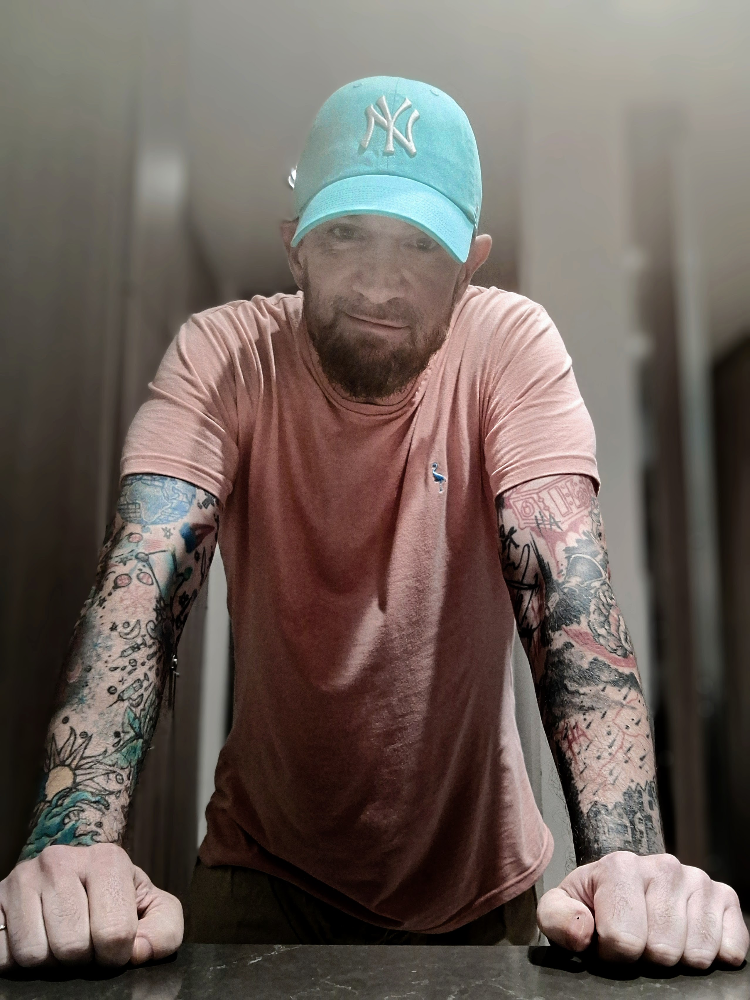

The Author
Justin Donner





An unflinching examination of addiction, mental illness, and domestic violence — told with rare clarity by someone who lived it.
An examination of addiction, mental illness and domestic violence unlike any other. ijwd was compiled using a lifetime collection of journals, notes, photos, arrest records, hospital documents, and candid conversations with those involved in the self-destruction contained herein.
As much a research project as a memoir (written by an author with a master’s degree from Cal Irvine and an extensive background in research writing), details and perspective never found in domestic violence, addiction or mental health literature are recounted in a way that will relate to addicts, enlighten professionals, and educate the loved ones who watch lives fall apart.
Wake up from the blackout, bloodied, bruised, in detox on a police hold. No clue. In PART 1, readers participate in the unraveling of sexual, sometimes violent intoxicated events countless addicts endure daily. This narrative puts the reader at the high point of college success, earning top-school billing as a pre-med student… then the sharp fall.
PART 1 compares top from bottom, while PARTS 2 and 3 take readers on an exploratory journey to show, not tell, but live through what could possibly derail a bright future while the soul-searching path to recovery is told through psychiatric hospital walls and a rehabilitation center.
Observe the origins and progression of addiction as a disease stripping away ambition and replacing it with maddening self-destruction. Medical school pressure and the rapid spiral which begins without warning, cunning, clever and chaotic are depicted without apology.
Wake up from the nightmare, try to piece together the facts, understand the blackout, blood and bruises. See what happens, feel the agony and horror first hand as rock bottom is found repeatedly.
— from I Just Woke Up Dead“Justin Donner’s I Just Woke Up Dead is one of the best books I have ever read in my life. It’s been a few days since I finished I Just Woke Up Dead and I still don’t feel ready to read another book. I can’t move on yet. There are many books that I love but never have I read a book that has grasped my soul as tightly as this memoir.”
“What a ride…. This book really made me think. I loved it! I’m adding it to my favorite books. I personally think that having the storyline of the recovery alongside the storyline of the ruin of Mr. Justin Donner was genius. What a brutally honest book to write. … I would recommend this book wholeheartedly!”
“Excellent read. The bravery in your life story that’s so raw and truthfully told is admirable. I couldn’t put this book down.”
“It was well written, well researched, very informative, and eye-opening. … Overall, I’m giving this book 4 out of 5 stars.”



Paperback, ebook, and audiobook. Experience the story that readers say they can’t move on from.